原帖
做 MiniMax H3 的兄弟有福了！
H3 专用提示词 LoRA 来了。
一句话就能自动扩写成分镜脚本，支持本地离线运行，不用 API、不花 Token。
13G+ 显存跑 27B，9G 跑 8B / Omni，低显存用 Writer。
github.com/pytraveler/MiniMax-H3-Prompt-Rewriter-ComfyUI
—— Andy L（@AndyL5cc），2026-10-08
核对：帖子里的显存数字和 README 对得上。27B 路线的“最小可用配置”约 13 GB 显存（GGUF，约 10 GB 下载）；8B 和 Omni 用 Q4_K_M 时都是约 9 GB；写作节点（Writer）最低约 5 GB（2.6 GB 下载）。要注意，27B 如果走 Transformers 默认的 nf4 量化，需要约 16 GB 显存，GGUF 按量化档位不同在 13–19 GB 之间。
这是什么
这是一套 ComfyUI 节点，服务于 LightX2V MiniMax-H3 T2VA Prompt Rewriter LoRA。你输入一句简短的提示词，它输出一段结构化、可以直接拿去生产的音视频描述，交给 MiniMax-H3 使用，全程在本地完成。
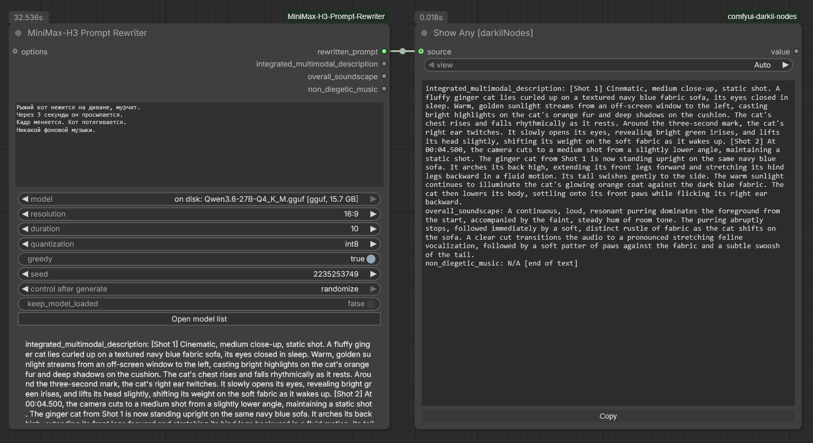
提示词可以用底座模型读得懂的任何语言写，但重写结果一律是英文，因为 MiniMax-H3 要的就是英文。
"A red fox walks through a snowy forest at dawn." + 16:9 + 15s
│
▼
Qwen3.6-27B + Prompt Rewriter LoRA
│
▼
integrated_multimodal_description: [Shot 1] ... [Shot 2] 0:06 ...
overall_soundscape: ...
non_diegetic_music: ...
│
▼
MiniMax-H3：视频 + 同步音频输出分成三个字段：integrated_multimodal_description（逐镜头的画面）、overall_soundscape（画内声音）、non_diegetic_music（配乐）。rewritten_prompt 是完整结果，可以直接粘进 MiniMax-H3 的文本输入。
四条路线怎么选
要得到这样的输出有四条路，节点包都提供了：
| 重写器（27B） | 重写器 8B | 重写器 Omni | 写作节点（Writer） | |
|---|---|---|---|---|
| 格式从哪来 | LoRA：一个 27B 模型，训练到不用任何提示也会输出 H3 格式 | 第二个 LoRA，底座能“看” | 第三个 LoRA，底座能“听” | MiniMax 官方写作指南，放在系统提示词里 |
| 模型 | 只能是 Qwen3.6-27B | 只能是 Qwen3-VL-8B-Instruct | 只能是 Qwen2.5-Omni-7B | 任何能跟随指令的 GGUF |
| 最小可用配置 | 约 10 GB 下载，约 13 GB 显存 | 约 6.1 GB 下载，约 9 GB 显存 | 约 6.2 GB 下载，约 9 GB 显存 | 2.6 GB 下载，约 5 GB 显存 |
| 任务 | T2VA | T2VA、I2VA、FL2VA、L2VA | T2VA、I2VA、FL2VA、L2VA、Ref2VA | T2VA、I2VA、FL2VA、L2VA、Ref2VA |
| 参考帧 | 需要用文字描述给它 | 自己看 | 自己看 | 需要用文字描述给它 |
| 片段和声音 | 需要用文字描述给它 | 需要用文字描述给它 | 自己看、自己听 | 需要用文字描述给它 |
| 质量 | 基准 | 同一套训练格式，下载量只有三分之一；对齐行没那么稳 | 唯一能听的；Ref2VA 下输出六个字段 | 很接近，而且能在 LoRA 带不动的硬件上跑 |
前三列可以合成一个节点 Universal Rewriter，切换标签页就换适配器，其他设置保持不动。README 的建议是：显卡只有 8 GB，就直接用写作节点。
此外，Prompt Presets 节点内置一千条现成的 MiniMax-H3 提示词，可以按画面风格和主题筛选。它不加载模型，也不下载任何东西。
硬件与依赖要求
走 LoRA 路线，面对的是一个 270 亿参数的语言模型。适配器只绑定特定的底座模型，所以下面这些要求绕不过去（写作节点不受这些限制）：
| 资源 | 要求 |
|---|---|
| 磁盘 | Qwen/Qwen3.6-27B 约 52 GB，适配器另需约 3.5 GB；走 GGUF 路线总共约 10–16 GB |
显存（nf4，默认） | 约 16 GB |
显存（int8） | 约 28 GB |
显存（bfloat16） | 约 54 GB，会通过 accelerate 溢出到系统内存 |
| 显存（GGUF） | 约 13–19 GB，取决于量化等级；少卸载几层到 GPU，占用还能更低 |
| 软件包 | transformers、peft、accelerate；nf4/int8 还需要 bitsandbytes。GGUF 路线什么都不用装：有 llama-cpp-python 就用它，没有就自动下载 llama.cpp 官方二进制 |
MiniMax-H3 自带的文本编码器不能拿来做这件事。它和 LoRA 的底座是两个不同的模型（Qwen3-VL-32B，词表 151936；底座是 Qwen3.6-27B，词表 248320）。它没有适配器要挂载的线性注意力in_proj_*模块，被截断到 64 层中的前 50 层，也没有lm_head和最后的归一化层，所以根本无法生成文本，只为 DiT 产出隐藏状态。
想省下载量的话，README 推荐用 Qwen3.6-27B 的 bitsandbytes nf4 重打包：约 17 GB 下载、约 16 GB 显存，不需要额外依赖。但这些重打包来自第三方。节点会核验 config.json，那只能证明架构形状对，不能证明上传者可信。compressed-tensors 和 modelopt（NVFP4）格式挂不上 LoRA，节点会在下载前报错。
安装
克隆到 ComfyUI/custom_nodes/，再把依赖装进 ComfyUI 实际使用的 Python 环境：
cd ComfyUI/custom_nodes
git clone https://github.com/pytraveler/MiniMax-H3-Prompt-Rewriter-ComfyUIWindows 便携版：
python_embeded\python.exe -m pip install -r ComfyUI\custom_nodes\MiniMax-H3-Prompt-Rewriter-ComfyUI\requirements.txt也可以用 ComfyUI-Manager 从 Comfy Registry 安装。节点包不会擅自往你的环境里 pip 安装任何东西。缺包时，它会给出适用于你当前 ComfyUI 解释器的安装命令。
七个示例工作流
安装后，这些工作流会出现在 ComfyUI 的模板浏览器里（Workflow → Browse Templates）。每个都能独立运行，并附有一张 “Read me first” 说明。
| # | 模板 | 需要什么 |
|---|---|---|
| 1 | Write a prompt：输入一句想法，输出完整的 H3 音视频描述 | 一个 2.6 GB 的 GGUF |
| 2 | Rewrite a prompt with the 27B LoRA：用 LightX2V 的适配器 | 一个 15.7 GB 的 GGUF |
| 3 | Write a prompt from references：先描述你的图片，再照着内容写 | 两个 GGUF，合计 6 GB |
| 4 | Ready-made prompts：一千条现成提示词，连同画面一起挑 | 什么都不需要 |
| 5 | Prompt to video：ComfyUI 自带的文生视频模板，前面接写作节点 | MiniMax-H3 权重 |
| 6 | References to video：换成 Ref2VA，图片按素材条顺序送进生成器 | MiniMax-H3 的 ref2va 权重 |
| 7 | LoRA triggers and effects：把适配器的触发词和 MiniMax 的十个特效放进写好的提示词 | 什么都不需要 |
只有 5 和 6 会加载 MiniMax-H3 检查点，其余工作流都只生成文本。3 和 6 的图像加载器故意留空，需要先选你自己的图片。
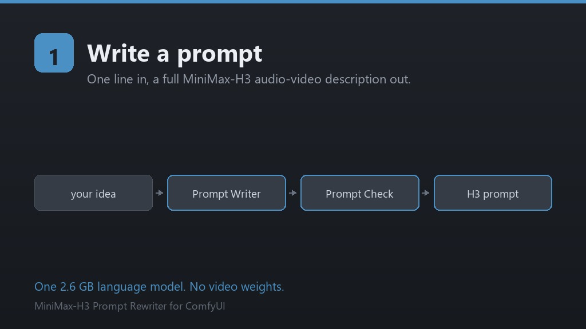
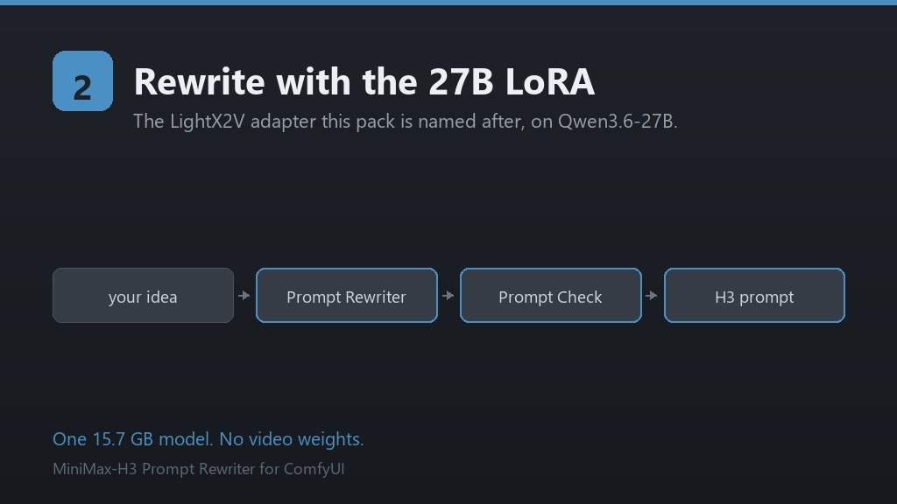
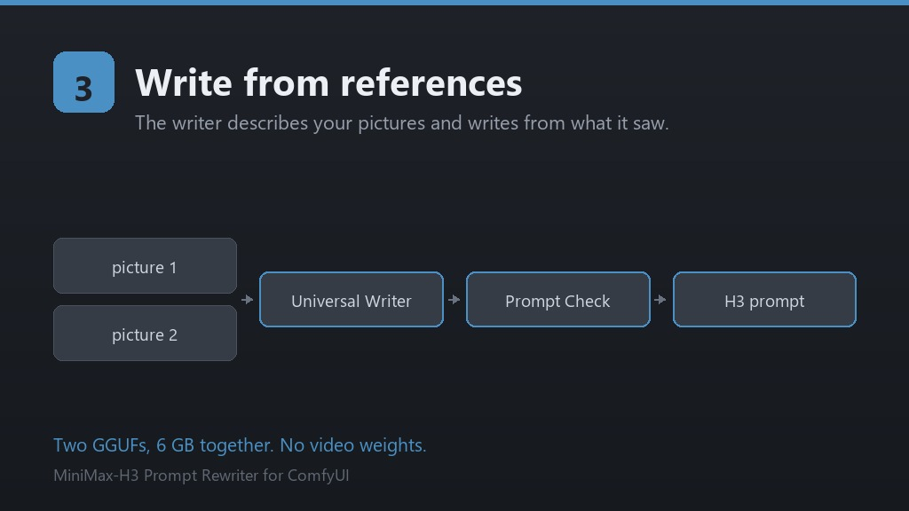
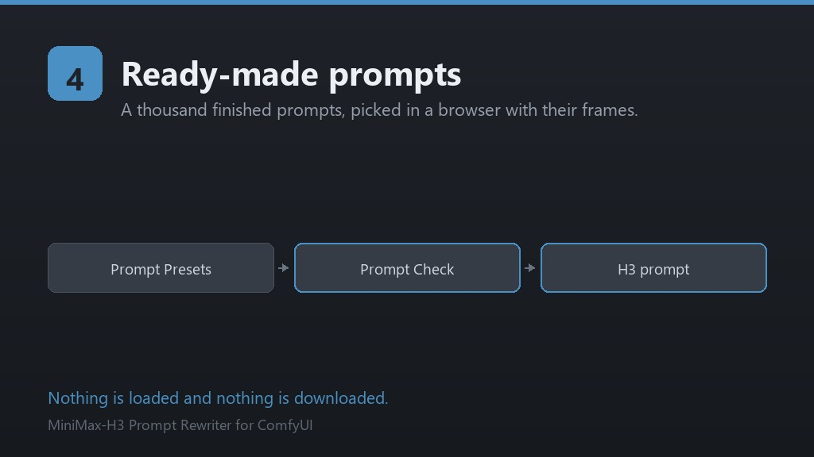
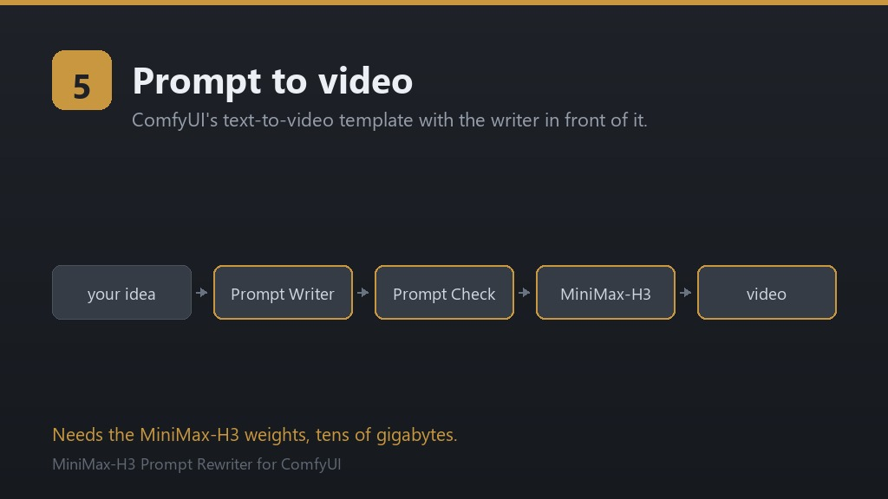
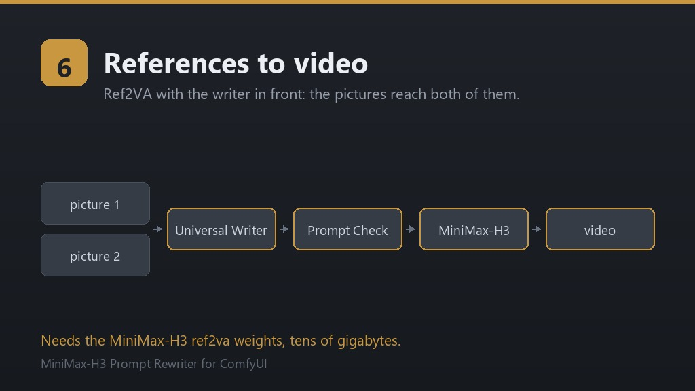
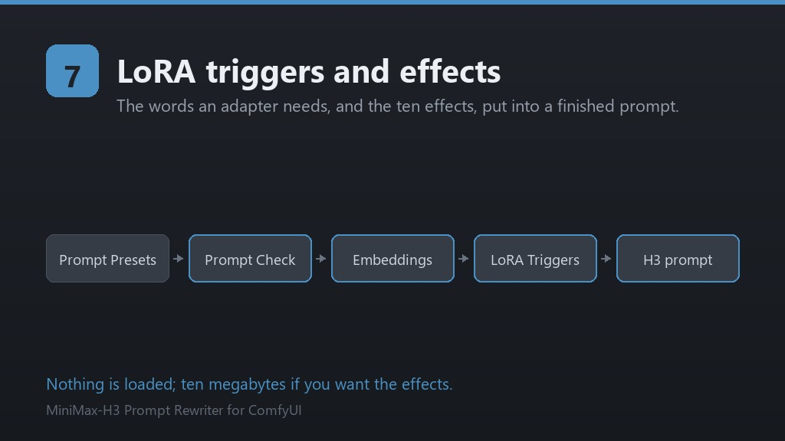
社区工作流：axiomgraph 的工作流把 Omni 重写器和 FL2VA 组合在一起（GPL-3.0，另外依赖几个其他节点包）。
节点速览
Prompt Rewriter（27B，主力节点）
缺什么就下载什么，加载模型、生成，然后释放显存。主要输入如下：
prompt：要扩写的那句短提示词。model：底座模型。会列出你的模型列表和硬盘上已有的 Qwen3.6-27B（前缀为on disk:）。首次使用时下载，中断后可续传。resolution/duration：要和交给 MiniMax-H3 的设置保持一致，否则镜头节奏会对不上。画幅从48:9到9:16。aspect_ratio：同一个设置的插槽版本，可以直接接 Resolution Selector 等节点的输出。quantization：nf4（默认，约 16 GB）、int8（约 28 GB）、bfloat16/float16（约 54 GB）。greedy：默认开启，输出是确定性的。keep_model_loaded：默认关闭。重写一结束就释放 27B，好让同一块 GPU 接着跑 H3 视频生成。
Prompt Rewriter 8B：能看画面
LightX2V 的第二个适配器，训练在 Qwen3-VL-8B-Instruct 上。它能直接看到参考帧，并据此写出对齐行。它覆盖 T2VA、I2VA、FL2VA、L2VA 四个任务，输出和 27B 一样，下游可以互换。
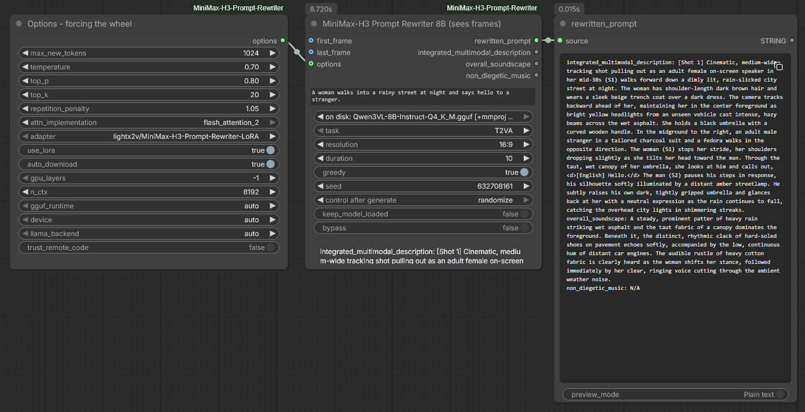
| 8B 配置 | 下载 | 显存 |
|---|---|---|
| Q4_K_M 底座 + 投影器 + Q8_0 适配器 | 4.7 + 0.7 + 0.7 GB | 约 9 GB |
| Q8_0 底座 + 投影器 + F16 适配器 | 8.1 + 0.7 + 1.3 GB | 约 13 GB |
safetensors 底座 + 适配器，nf4 | 17.5 + 2.8 GB | 约 8 GB |
safetensors 底座 + 适配器，bfloat16 | 17.5 + 2.8 GB | 约 20 GB |
局限：毕竟是 8B，对齐行里的时间戳有时会写成三位小数；在 FL2VA 上，最后一张图偶尔会被记到 Shot 1 上。27B 没有这些问题。粘贴前最好扫一眼。
Prompt Rewriter Omni：能看也能听
LightX2V 的第三个适配器，训练在 Qwen2.5-Omni-7B 上。图片、视频片段、声音都可以原样送给它。它也是三个重写器里唯一覆盖全参考任务 Ref2AV 的，这个任务输出六个字段：subject_definitions、summary、retention_analysis、detailed_description、overall_soundscape、non_diegetic_music。
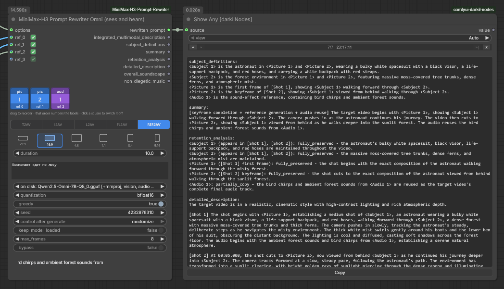
| Omni 配置 | 下载 | 显存 |
|---|---|---|
| Q4_K_M 底座 + 投影器 + Q8_0 适配器 | 4.4 + 1.4 + 0.34 GB | 约 9 GB |
| Q8_0 底座 + 投影器 + F16 适配器 | 8.1 + 1.4 + 0.65 GB | 约 13 GB |
safetensors 底座 + 适配器，nf4 | 22.4 + 1.3 GB | 约 9 GB |
safetensors 底座 + 适配器，bfloat16 | 22.4 + 1.3 GB | 约 20 GB |
Prompt Writer（写作节点，低显存首选）
输出同样的三个字段，但不需要 LoRA，也不需要 27B。它把 MiniMax 官方的提示词写作指南放进系统提示词，任何能跟随指令的 GGUF 都能照着写。README 称，一个 5.2 GB 的 Qwen3.5-9B 大约 20 秒就能填满三个字段。
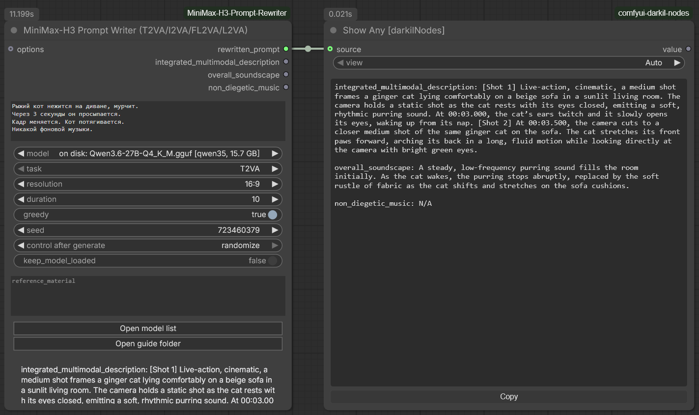
这里有个取舍：LoRA 本身就是那个格式，而写作节点的格式靠约 4000 token 的指令撑着，所以 LoRA 写出的文字更密实、格式更可靠；写作节点的好处是能在 LoRA 跑不动的硬件上运行。做 I2VA/FL2VA/L2VA 时，写作节点只读文字、不读像素，需要手写参考帧描述，或者从 Reference Caption 节点接入。
| 推荐的写作模型 | 下载 | 显存（指南进入上下文后） |
|---|---|---|
Qwen3.5-4B Q4_K_M | 2.6 GB | 约 5 GB，8 GB 显卡从这个开始 |
Qwen3.5-9B Q4_K_M | 5.3 GB | 约 8 GB，每 GB 换来的文笔最好 |
Qwen3.5-9B Uncensored (HauhauCS) Q4_K_M | 5.2 GB | 约 8 GB，原版会拒绝的场景它不拒绝 |
Gemma 3 12B Instruct Q4_K_M | 6.8 GB | 约 10 GB，非 Qwen 的选择 |
Mistral Small 3.2 24B Instruct Q4_K_M | 13.4 GB | 约 17 GB，适合 16 GB 及以上的显卡 |
在 system_prompt 里换掉指南，写作节点就能改为给 LTX、Krea、Wan 或你自己的风格写提示词。
其他节点
- Universal Rewriter：三个重写 LoRA 合在一个节点里，用标签页切换。
- Universal Writer：一个节点完成一整个镜头，包括描述参考素材、调整素材顺序（可拖动）和写提示词，覆盖五个任务。
- Reference Caption / Multi Reference Caption：把图片、声音、视频变成写作节点需要的文字。README 在 3.4 GB 的 Qwen2.5-Omni-3B 上实测：一帧画面 3 秒，一段声音 2 秒，一段视频 5 秒。
- Guide Prompt (any LLM)：只拼出基于指南的 system/user 提示词，不跑模型，可以接到你已有的任何 LLM 节点（本地、API、远程均可）。
- Prompt Check：按同一套规则检查任意来源的 H3 提示词并拆分字段，不加载模型。
- Prompt Reducer / Reduce Prompt (any LLM)：反向操作，把写好的 H3 提示词还原成一句短句。
- Effect Embeddings：把 MiniMax 随 H3 发布的十个特效嵌入（子弹时间、黑魔法、喷火等）放进提示词。
- LoRA Triggers：把视频 LoRA 的触发词保存在节点上，放回写好的提示词。
- Reference Adapter / Reference Slots：负责参考素材的拆分与编号对齐，保证提示词里的
<Picture 1>和送进MiniMaxH3ReferenceToVideo的素材对应一致。 - Prompt Presets：内置一千段现成提示词，带二十种拍摄风格、二十类主体等标签筛选，每条配一帧画面，共 6 MB，运行时不下载任何东西。
- 另有提示词库（保存命名提示词）、重复上一次的答案、答案自检、模型列表编辑窗口（下载前可先 “Check it”），并支持复用 Ollama 已拉取的模型。
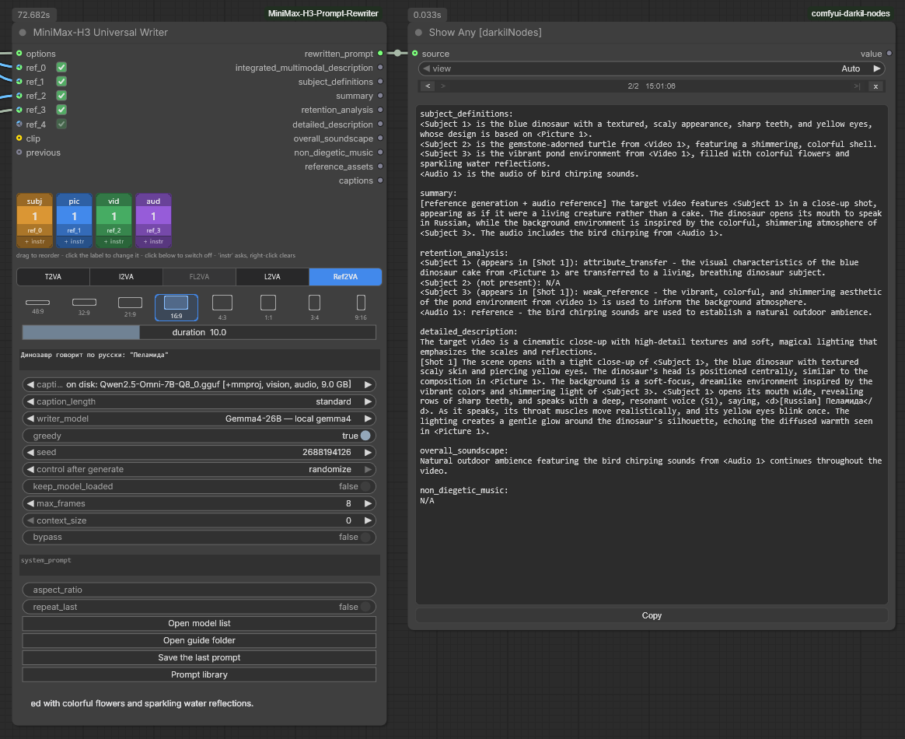
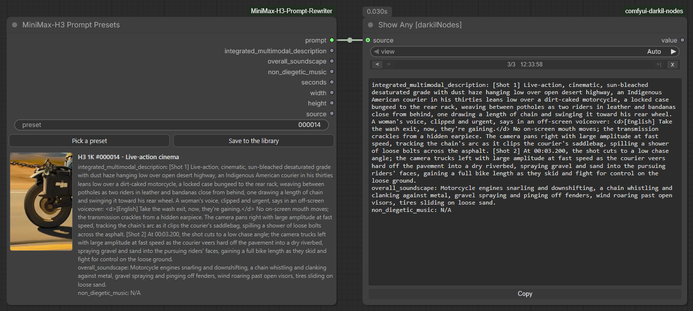
权重存放位置与 GGUF 路线
ComfyUI/models/LLM/
├── Qwen3.6-27B/ # 底座模型，约 52 GB
├── MiniMax-H3-Prompt-Rewriter-LoRA/ # 适配器，约 3.5 GB
├── Qwen3.5-9B-Q4_K_M.gguf # 一个写作模型，一个文件
└── Qwen2.5-Omni-3B/ # 一个描述模型：模型和 mmproj 在一起
ComfyUI/user/minimax_h3_rewriter/
├── models.json # 你的模型列表
├── guides/ # 两份写作指南，40 KB
└── runtime/ # llama.cpp 二进制（如果下载过）节点会先在 ComfyUI 登记的模型目录（含 extra_model_paths.yaml）和 Hugging Face 缓存里查找已有的 Qwen3.6-27B，找到就复用，不重复下载。
在模型列表里选 [gguf] 条目，重写器就改由 llama.cpp 运行，不需要任何 pip 安装：有 llama-cpp-python 就用，没有就用本机已有的 llama.cpp，再没有就下载官方二进制。
llama_backend | 下载 | 说明 |
|---|---|---|
auto | 34 或 511 MB | 选本机能跑的最快构建。Windows 上算力为 8.6/8.9/12.0/12.1 的 NVIDIA 显卡用 CUDA，其余用 Vulkan |
vulkan | 34 MB | NVIDIA、AMD、Intel 通用，吞吐约为 CUDA 的一半 |
cuda | 511 MB | NVIDIA 上约快 2 倍，仅限 Windows（上游不发布 Linux CUDA 构建，需要自行编译） |
cpu | 17 MB | 完全没有 GPU 时使用 |
GGUF 路线用的是转换过的适配器：27B、8B、Omni。更新的 Qwen（例如 Qwen3.8-27B）不能替代：形状检查会放行，LoRA 也会被挂上去，但它从没在那些权重上训练过。节点会读取 GGUF 自带的名字，如果不是 Qwen3.6-27B 就发出警告。
注意事项
- 速度：Qwen3.6-27B 是混合模型，64 层中有 48 层是线性注意力。没装
flash-linear-attention和causal-conv1d时，会退回更慢的纯 PyTorch 路径，结果正确但速度慢；这两个包在 Windows 上不好编译。 - 确定性：开启
greedy后，同样的提示词、分辨率、时长和种子会得到同样的重写结果。 - 写作节点的格式是“被遵循的”，不是“被保证的”：建议保持
greedy开启，小模型一采样就容易偏离格式。缺字段时，节点会返回已拿到的内容并标出缺口。 - 重写可能添加短提示词里没有的细节。身份、对白、时间点或构图必须精确时，先审一遍再生成。
- 预设片段和截帧是 MiniMax-H3 的输出，不得用于训练模型（见下方致谢）。
致谢与许可证
模型方面的工作都来自 LightX2V，这个仓库只是把他们的适配器接入 ComfyUI。项目作者建议觉得有用的人去给 ModelTC/LightX2V 点星。
| 组成部分 | 来源 |
|---|---|
| LoRA 适配器 | lightx2v/MiniMax-H3-Prompt-Rewriter-LoRA |
| LoRA 适配器，8B | lightx2v/MiniMax-H3-Prompt-Rewriter-LoRA-8B |
| 底座语言模型 | Qwen/Qwen3.6-27B · Qwen/Qwen3-VL-8B-Instruct |
| 视频与音频生成器 | MiniMaxAI/MiniMax-H3 |
| 提示词写作指南 | MiniMaxAI/MiniMax-H3 docs/（运行时下载） |
| 推理框架 | ModelTC/LightX2V |
| 内置提示词及其片段 | ostris/minimax_h3_1k：经作者许可使用；提示词实际上等同于 MIT，片段与截帧是 MiniMax-H3 的输出，不得用于训练模型 |
| 拍摄风格与主体标签 | H3 Atlas |
使用 MiniMax-H3 须遵守官方仓库的许可证和可接受使用条款。视频评测：AxiomGraph（英文）、ЭйАй Генератьон（俄文）。
许可证：MIT，只覆盖 ComfyUI 集成部分的代码，模型权重各有许可证。